TRENUTNO:
Bez pritiska
SLEDI:
Do sledećeg poziva (Radio serija)
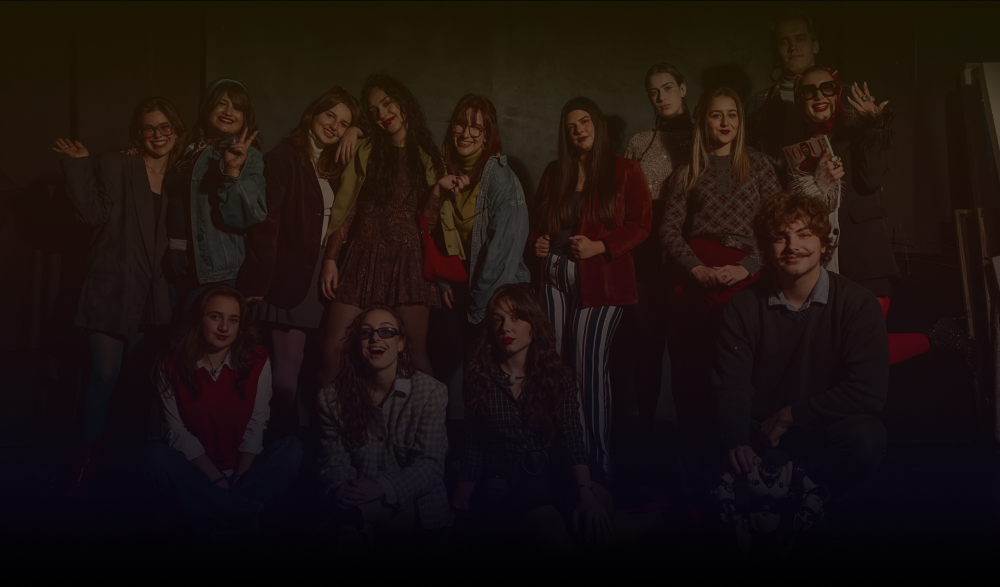
FLUX radio predstavlja
studentski projekat pokrenut na
Fakultetu dramskih umetnosti u Beogradu, na Katedri za menadžment i produkciju pozorišta, radija i
kulture. Kao
petodnevna digitalna radio-stanica,
FLUX pruža mladima slobodan medijski prostor za kreativno
izražavanje i otvara dijalog o temama koje su važne čitavoj
društvenoj zajednici, ali su vilo često zanemarivane. FLUX radio je
isključivo onlajn radio-stanica, studenata Fakulteta dramskih
umetnosti, koja u svom interesu ima kreiranje medijskog prostora za
mlade autore, producente i ljubitelje radija.
Svojom programskom koncepcijom i muzičkom selekcijom, FLUX za cilj
ima da pokaže da je radio mnogo više od jukeboxa-a A-list hitova,
ali i da stori priliku mladima da kroz
nove forme i razne načine obraduju
različite teme!
Svake godine
klasa treće godine zajednički bira
temu koju želi da preispita i potom o njoj govori, kao i da odgovori
na pitanja zašto je ona te godine važna, koga se tiče i koji je
jedinstveni doprinos koji naš radio može da pruži.
Kao i samo ovaranje, program FLUX radija prilagoden je slušaocima nezavisno od starosne dobi, budući da sadrži različite. programske segmente koji pokrivaju širok spektar tema, a ono što ovogodišnji FLUX radio čini dodatno primamljivim i mladoj i starijoj populaciji jeste upravo tema kojom su studenti vodeni u koncipiranju FLUX-a, a to je retrofuturizam. Ove godine, FLUX radio sa sloganom FLUX RADIO, RADI, RADIĆE! emituje se 18-22. novembra na www.fluxradio.rs sa svojom programskom šemom od 09:00h do 00:00h!
Retrofuturizam predstavlja pojam i pravac koji obuhvata vizije i
iščekivanja ljudi iz prošlosti o
budućnosti.
S obzirom da su imali odredena iščekivanja, ljudi iz prošlosti
vršili su direktan uticaj na kreiranje svoje budućnosti, odnosno
naše sadašnjosti koju upravo živimo. Na taj način, retrofuturizam
se takođe vezuje za uticaj prošlosti na kreiranje budućnosti, što
je tema koju ovogodišnje izdanje FLUX radija aktuelizuje u skladu
sa današnjim vremenom, pa je time i problematizuje, postavljajući
direktna pitanja društvu:
Na koji način je prošlost na našim prostorima uticala na sadašnjost koju danas živimo?
Koliko smo zapravo zadovoljni stvarnošću koju smo kreirali u odnosu na iščekivanja o istoj?
Kako svojim akcijama svi mi utičemo na zajedničku budućnost?
I naposletku - da li je nešto moglo da bude drugačije?
Stoga, iako su tendencije iščekivanja oduvek bile neosporivi deo
ljudske prirode, FLUX ne želi da se ta navika latentno prenese i u
našu budućnost. FLUX veruje da se taj krug koračanja kroz vreme
zaustavlja i menja upravo sada.
I naposletku, FLUX ne želi da dočeka pitanje svojih naslednika -
da li je nešto moglo da bude drugačije, jer se postarao da ovoj
sadašnjosti maksimalno doprinese kako bi budućnost, zapravo, bila
drugačija.
Slušajte FLUX radio i saznajte koliko zapravo svoje prošlosti
medusobno delimo, a koliko ćemo budućnosti tek podeliti.
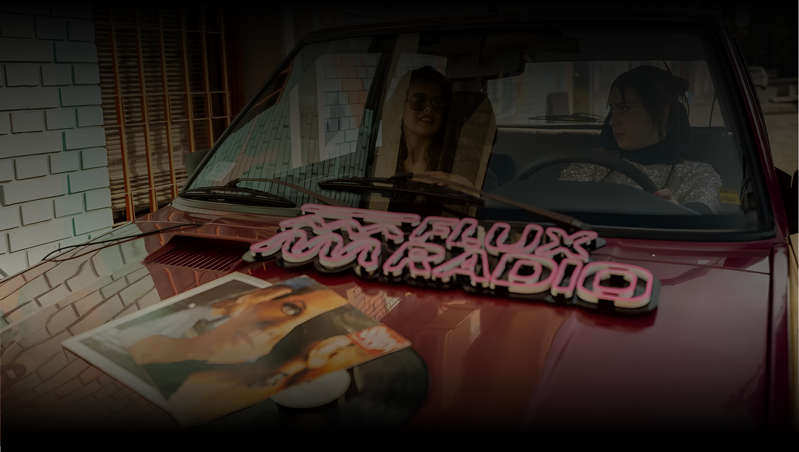
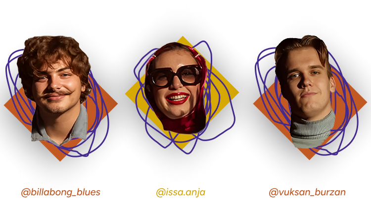
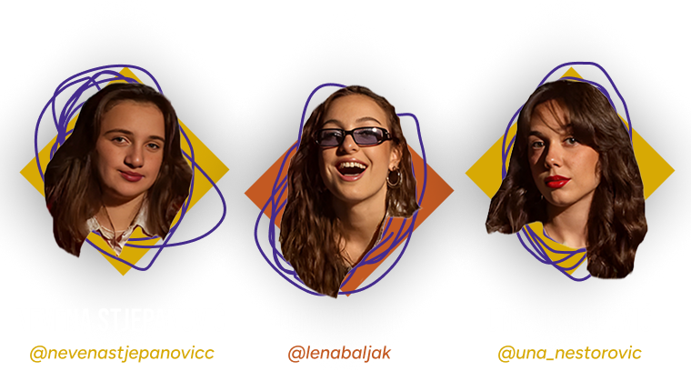
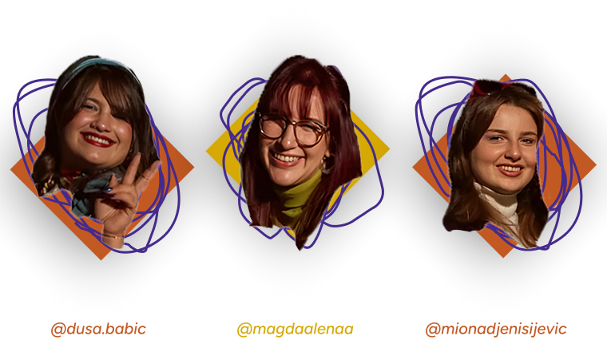
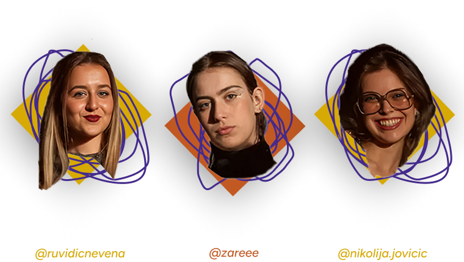
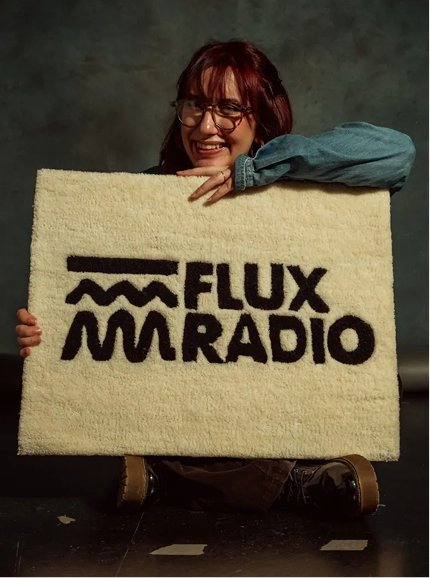
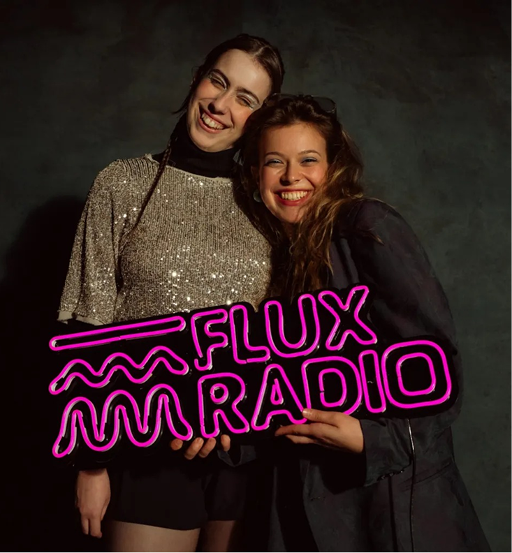
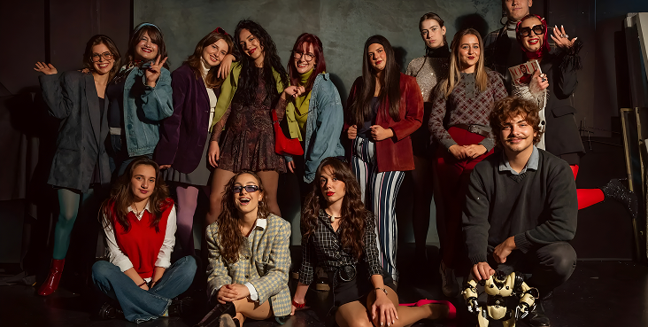
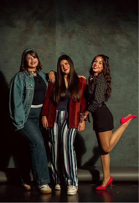
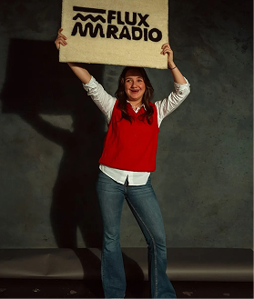
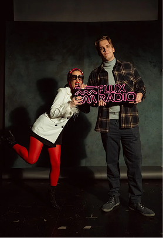
TRENUTNO:
Bez pritiska
SLEDI:
Do sledećeg poziva (Radio serija)